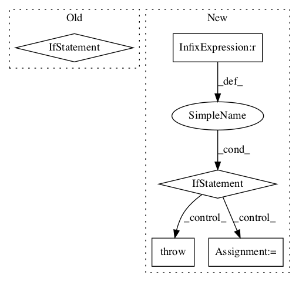

534c4dc7423681faab78d1829c1ec3c31ffb8330,niftynet/layer/resampler.py,ResamplerLayer,_resample_inv_dst_weighting,#ResamplerLayer#Any#Any#,319
Before Change
try:
batch_size = int(in_size[0])
in_spatial_rank = infer_spatial_rank(inputs)
if not partial_shape:
in_spatial_size = in_size.as_list()[1:-1]
except (TypeError, AssertionError, ValueError):
tf.logging.fatal("Unknown input shape, at least batch size "
"and rank of the inputs are required.")
raiseAfter Change
if batch_size == n_coords:
samples = [tf.gather_nd(img, knot)
for (img, knot) in zip(batch_inputs, batch_knots)]
elif n_coords == 1 and batch_size > 1:
samples = [tf.gather_nd(img, batch_knots[0])
for img in batch_inputs]
else:
raise NotImplementedError
samples = tf.stack(samples, axis=1)
// weighted average over N neighbours
return tf.reduce_sum(
samples * tf.expand_dims(point_weights, axis=-1), axis=0)In pattern: SUPERPATTERN
Frequency: 4
Non-data size: 5
Instances Project Name: NifTK/NiftyNet
Commit Name: 534c4dc7423681faab78d1829c1ec3c31ffb8330
Time:
Author: null
File Name: niftynet/layer/resampler.py
Class Name: ResamplerLayer
Method Name: _resample_inv_dst_weighting
Project Name: tensorflow/agents
Commit Name: b5ae1c6bde39f5130c975992198f1f8ee5200f9a
Time:
Author: null
File Name: tf_agents/policies/categorical_q_policy.py
Class Name: CategoricalQPolicy
Method Name: __init__
Project Name: reinforceio/tensorforce
Commit Name: 980fe014b6215730ac4fdfa451b067e6fb44e622
Time:
Author: null
File Name: tensorforce/agents/dpg.py
Class Name: DeterministicPolicyGradient
Method Name: __init__
Project Name: f90/Wave-U-Net
Commit Name: fe50c52a31b3231a1777f14eb6131a819f082fc8
Time:
Author: null
File Name: Config.py
Class Name:
Method Name: cfg